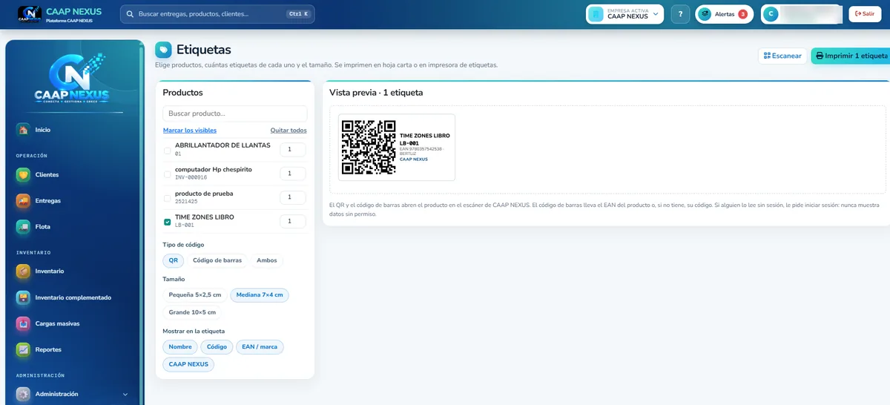

← Volver al blog
Inventario · Guía práctica
Cómo controlar el inventario con códigos QR y el celular
Si en tu bodega el Excel dice que hay 12 unidades y en el estante hay 9, no estás solo. Es uno de los problemas más comunes en pequeñas y medianas empresas: el inventario se registra a mano, tarde o por varias personas a la vez, y al final nadie confía en el número.
La buena noticia es que hoy no necesitas lectores costosos ni equipos especiales para cambiar eso. Con etiquetas QR o de código de barras y el celular que ya tienes, puedes registrar cada entrada y salida en segundos y sin errores de digitación.
¿Por qué el inventario en Excel deja de funcionar?
- Se digita a mano: un número cambiado o un código mal escrito y el stock queda descuadrado.
- Se actualiza tarde: lo que salió en la mañana se anota en la tarde, si alguien se acuerda.
- No avisa: te enteras de que algo se acabó cuando un cliente lo pide.
- No deja historia: si el número no cuadra, es difícil saber quién movió qué y cuándo.
Cómo funciona un inventario con códigos QR, paso a paso
1. Identifica cada producto con una etiqueta
Cada producto recibe una etiqueta con un código QR o un código de barras. Si el producto ya trae su código EAN de fábrica, puedes usar ese mismo; si no, el sistema le asigna uno. Las etiquetas se imprimen en una hoja carta normal o en una impresora de etiquetas.

2. Escanea con la cámara del celular
En lugar de buscar el producto en una lista y escribir la cantidad, abres el escáner, apuntas la cámara a la etiqueta y el producto aparece al instante con su stock actual. Si el código todavía no está registrado, lo asignas a un producto existente o creas uno nuevo en ese mismo momento.
3. Registra la entrada o la salida
Con el producto en pantalla eliges Entrada o Salida, indicas la cantidad y, si aplica, el documento, el lote y la fecha de vencimiento. Al guardar, el stock se actualiza de inmediato para todo el equipo.
4. Deja que el sistema te avise
Cuando cada movimiento queda registrado al momento, el sistema puede avisarte a tiempo: productos que bajaron de su stock mínimo, lotes próximos a vencer o ítems sin clasificar. Así repones antes de quedarte sin mercancía.
5. Consulta la historia de cada producto
Cada entrada y salida queda en el Kardex del producto, con fecha, tipo de movimiento y cantidad. Si algo no cuadra, sabes exactamente qué pasó.
Consejos para empezar sin complicarte
- Empieza por lo que más se mueve: etiqueta primero los productos de mayor rotación y luego el resto.
- Haz un conteo inicial: el sistema solo es tan confiable como el número con el que arrancas.
- Define mínimos realistas: piensa cuánto tarda tu proveedor en entregar y cuánto vendes en ese tiempo.
- Etiquetas legibles: imprímelas nítidas, sin reflejos, y pégalas donde la cámara las lea fácil.
- Una sola forma de registrar: todo el equipo escanea; nada de anotar "por aparte".
Cómo lo resolvimos en CAAP NEXUS
Todo lo anterior es lo que hace el Inventario complementado de CAAP NEXUS, el módulo de inventario de nuestro propio sistema:
- Escáner desde el celular que lee códigos QR y de barras (EAN, UPC, Code 128 y más).
- Etiquetas QR o de código de barras en tres tamaños (5×2,5 cm, 7×4 cm y 10×5 cm), para hoja carta o impresora de etiquetas.
- Stock, reservado y disponible por cada ítem, con avisos de mínimos y lotes por vencer.
- Materias primas, insumos y producto terminado, con Kardex de cada movimiento.
- Carga desde archivo y exportación a Excel, para no empezar de cero.
Y por seguridad, si alguien escanea una etiqueta sin haber iniciado sesión, el sistema le pide entrar primero: nunca muestra datos sin permiso.
Puedes ver el escáner funcionando en un celular real en la sección Inventario complementado de nuestra página principal.
¿Quieres verlo con tus propios productos?
Te mostramos el sistema funcionando y lo ajustamos a cómo opera tu bodega.
Agenda una demo del inventario